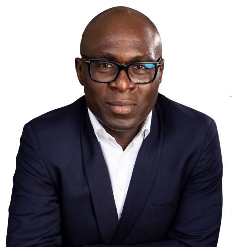

Razaq SHUAIB is an oil and gas engineer with two decades of experience in diverse operational assets ranging from deepwater offshore to conventional offshore and onshore environments.
His expertise cuts across asset operations and maintenance management, project management, business continuity management, production optimization, process digitalisation, IOT and real-time oil & gas asset operational monitoring and control.
Razaq is currently focused on energy transition and renewable energies. Specifically, he is exploring the development of projects and businesses involving fit-for-purpose sustainable energy mix in sub-Saharan Africa.